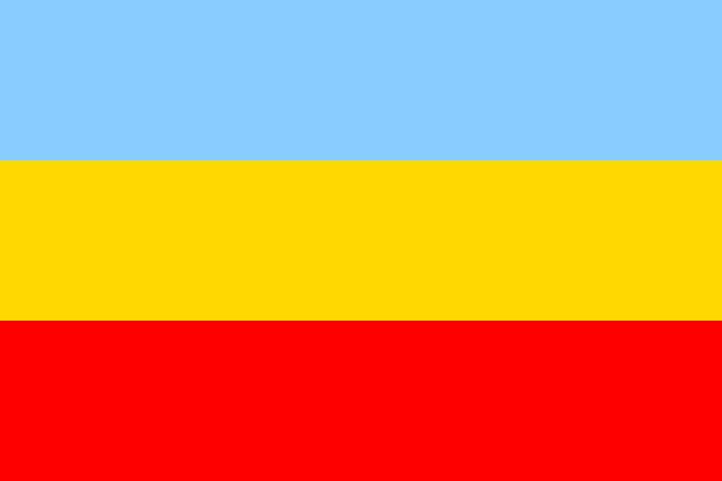

El departamento de Cundinamarca está ubicado en la región andina de Colombia y rodea gran parte de la capital del país, Bogotá. Es una región con gran diversidad geográfica, que incluye montañas de la Cordillera Oriental, valles y zonas cálidas cercanas al río Magdalena. Su economía se basa principalmente en la agricultura, la ganadería, la industria y el turismo. Además, Cundinamarca tiene una rica historia cultural, ya que fue territorio de la civilización indígena muisca antes de la llegada de los españoles, lo que dejó importantes tradiciones y sitios históricos en la región.
Simbolos de cundinamarca
La bandera de cundinamarca representa la historia y la libertad del departamento

Escudo
El escudo simboliza la independencia y la identidad del pueblo cundinamarques
Himno
El himno de Cundinamarca exalta la cultura, la historia y el orgullo de sus habitantes